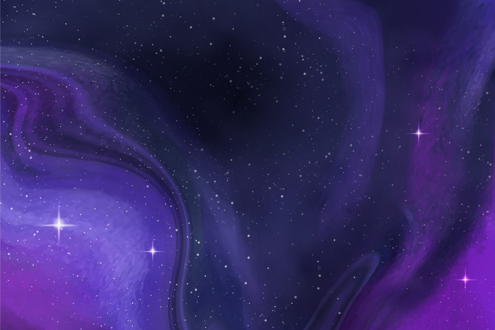
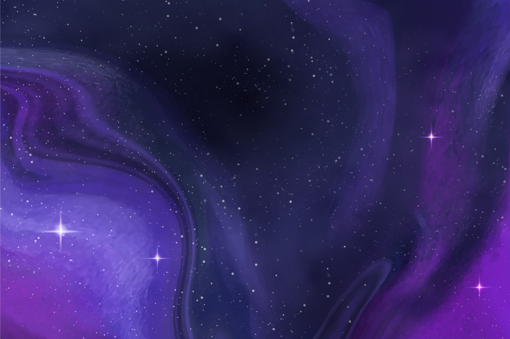

Matahari
Matahari, surya, mentari, atau aftab adalah bintang di pusat tata surya. Bentuknya nyaris bulat
dan
terdiri dari plasma
panas bercampur medan magnet. Diameternya sekitar 1.392.684 km, kira-kira 109 kali
diameter Bumi, dan
massanya (sekitar 2×1030 kilogram, 330.000 kali massa Bumi) mewakili kurang lebih 99,86 % massa
total tata surya.
Matahari merupakan benda langit terbesar di galaksi Bima Sakti yang besarnya bahkan 10 kali
planet
terbesar tata surya,
Jupiter.
Secara kimiawi, sekitar tiga perempat massa matahari terdiri dari hidrogen, sedangkan sisanya
didominasi helium. Sisa
massa tersebut (1,69%, setara dengan 5.629 kali massa Bumi) terdiri dari elemen-elemen berat
seperti
oksigen, karbon,
neon, dan besi. Matahari terbentuk sekitar 4,6 miliar tahun yang lalu akibat peluruhan gravitasi
suatu wilayah di
dalam sebuah awan molekul besar. Sebagian besar materi berkumpul di tengah, sementara sisanya
memipih menjadi cakram
beredar yang kelak menjadi tata surya. Massa pusatnya semakin panas dan padat dan akhirnya
memulai
fusi termonuklir di
intinya.
Merkurius
Merkurius atau Utarid merupakan planet terkecil di Tata Surya sekaligus yang terdekat dari
Matahari.
Periode revolusi
planet ini merupakan yang terpendek dari semua planet di Tata Surya, yakni 87,79 hari. Seperti
halnya Venus, Merkurius
merupakan planet inferior yang letak orbitnya berada di sebelah dalam orbit Bumi, dan ketika
diamati
dari Bumi, jarak
sudutnya dari Matahari tidak pernah melebihi 28°. Karena jarak yang dekat dengan Matahari,
planet
ini hanya dapat
dilihat di dekat ufuk barat setelah matahari terbenam atau ufuk timur sebelum matahari terbit,
atau
biasanya ketika
aram. Merkurius akan tampak seperti bintang yang terang jika diamati pada waktu tersebut, tetapi
sering kali jauh lebih
sulit untuk diamati daripada Venus. Jika diamati dari teleskop, Merkurius akan menampilkan
serangkaian fase yang mirip
dengan fase Venus dan Bulan, ketika bergerak di orbit bagian dalamnya yang relatif terhadap Bumi
dan
terjadi berulang
dalam satu siklus sinodiknya, yakni sekitar 116 hari.
Merkurius memiliki rotasi yang unik dalam Tata Surya. Planet ini terkunci pasang surut terhadap
Matahari dalam
putaran–resonansi orbit 3:2, yang berarti bahwa relatif terhadap bintang tetap, planet ini
berotasi pada porosnya
tepat tiga kali untuk setiap dua kali periode revolusi mengelilingi Matahari. Seperti yang
diamati dari Matahari,
dalam kerangka acuan yang berotasi dengan gerakan orbit, Merkurius terlihat hanya berotasi
sekali
setiap dua tahun
Merkurius.
Venus
Venus, Kejora (Bahasa Melayu) , Makbram (Bahasa Biak) atau Zohrah adalah planet terdekat kedua
dari
Matahari setelah
Merkurius. Planet ini mengorbit Matahari selama 224,7 hari Bumi. Venus tidak memiliki satelit
alami
dan dinamai dari dewi cinta dan kecantikan dalam mitologi Romawi. Setelah Bulan, planet ini
merupakan objek alami tercerah di langit malam, dengan magnitudo tampak sebesar −4,6 yang cukup
cerah untuk menghasilkan bayangan. Venus merupakan planet inferior dengan sudut elongasi yang
mencapai 47,8°. Kecerahan maksimal planet ini dapat dilihat segera sebelum matahari
terbit atau setelah matahari terbenam, sehingga disebut Bintang Fajar atau Bintang Senja.
Venus adalah planet kebumian dan kadang-kadang disebut “planet saudara” Bumi karena ukuran,
gravitasi, dan komposisi
yang mirip (Venus merupakan planet terdekat dari Bumi dan planet yang ukurannya paling mendekati
Bumi). Namun, dalam hal
lain planet ini sangat berbeda dari Bumi. Planet ini memiliki atmosfer terpadat di antara empat
planet kebumian yang
terdiri dari 96% karbon dioksida. Tekanan atmosfer permukaan Venus 71 kali lebih besar daripada
Bumi. Dengan rata-rata
suhu permukaan sebesar 735 K (462 °C; 863 °F), Venus merupakan planet terpanas di Tata Surya.
Planet
ini tidak memiliki
siklus karbon yang memerangkap karbon dalam batuan dan kenampakan permukaan, dan juga tidak
memiliki
kehidupan organik
yang dapat menyerap karbon dalam bentuk biomassa.
Bumi
Bumi adalah planet terdekat ketiga dari Matahari yang merupakan planet terpadat dan terbesar
kelima
dari delapan planet
dalam Tata Surya. Bumi juga merupakan planet terbesar dari empat planet kebumian di Tata Surya.
Bumi
terkadang disebut
dengan dunia atau "Planet Biru".
Bumi terbentuk sekitar 4,54 miliar tahun yang lalu, dan kehidupan sudah muncul di permukaannya
paling tidak sekitar 3,5
miliar tahun yang lalu. Biosfer Bumi kemudian secara perlahan mengubah atmosfer dan kondisi
fisik dasar lainnya,
yang memungkinkan terjadinya perkembangbiakan organisme serta pembentukan lapisan ozon, yang
bersama
medan magnet Bumi
menghalangi radiasi surya berbahaya dan mengizinkan makhluk hidup mikroskopis untuk berkembang
biak
dengan aman di
daratan.
Litosfer Bumi terbagi menjadi beberapa segmen kaku, atau lempeng tektonik, yang mengalami
pergerakan
di seluruh
permukaan Bumi selama jutaan tahun. Lebih dari 70% permukaan Bumi ditutupi oleh air, dan sisanya
terdiri dari benua
dan pulau-pulau yang memiliki banyak danau dan sumber air lainnya yang bersumbangsih terhadap
pembentukan hidrosfer.
Kutub Bumi sebagian besarnya tertutup es; es padat di Antarktika dan es laut di paket es kutub.
Interior Bumi masih
tetap aktif, dengan inti dalam terdiri dari besi padat, sedangkan inti luar berupa fluida yang
menciptakan medan magnet,
dan lapisan tebal yang relatif padat di bagian mantel.
Mars
Mars adalah planet terdekat keempat dari Matahari. Namanya diambil dari dewa perang Romawi, Mars.
Planet
ini sering dijuluki
sebagai "planet merah" karena tampak dari jauh berwarna kemerah-kemerahan. Ini disebabkan oleh
keberadaan besi(III)
oksida di permukaan planet Mars. Mars adalah planet bebatuan dengan atmosfer yang tipis. Di
permukaan Mars terdapat
kawah, gunung berapi, lembah, gurun, dan tudung es. Periode rotasi dan siklus musim Mars mirip
dengan Bumi. Di Mars
berdiri Olympus Mons, gunung tertinggi di Tata Surya, dan Valles Marineris, lembah terbesar di
Tata
Surya. Selain itu,
di belahan utara terdapat cekungan Borealis yang meliputi 40% permukaan Mars.
Lingkungan Mars lebih bersahabat bagi kehidupan dibandingkan keadaan planet Venus. Namun begitu,
keadaannya tidak cukup
ideal untuk manusia. Suhu udara yang cukup rendah dan tekanan udara yang rendah, ditambah dengan
komposisi udara yang
sebagian besar karbondioksida, menyebabkan manusia harus menggunakan alat bantu pernapasan jika
ingin tinggal di sana.
Misi-misi ke planet merah ini, sampai penghujung abad ke-20, belum menemukan jejak kehidupan di
sana, meskipun yang amat
sederhana.
Jupiter
Yupiter, adalah planet terdekat kelima dari Matahari setelah Merkurius, Venus, Bumi, dan Mars.
Planet
ini juga
merupakan planet terbesar di Tata Surya. Jupiter merupakan raksasa gas dengan massa seperseribu
massa Matahari dan
dua setengah kali jumlah massa semua planet lain di Tata Surya. Planet ini dan raksasa gas lain
di
Tata Surya (yaitu
Saturnus, Uranus, dan Neptunus) kadang-kadang disebut planet Jovian atau planet luar. Jupiter
telah
dikenal oleh para
astronom sejak zaman kuno, dan dikaitkan dengan mitologi dan kepercayaan religius banyak
peradaban.
Bangsa Romawi
menamai planet ini dari dewa Jupiter dalam mitologi Romawi. Saat diamati dari Bumi, magnitudo
tampak
Jupiter dapat
mencapai −2,94, yang cukup terang untuk menghasilkan bayangan, dan juga menjadikannya objek
tercerah
ketiga di
langit malam setelah Bulan dan Venus, walaupun Mars dapat menyaingi kecerahan Jupiter pada saat
tertentu.
upiter sebagian besar terdiri dari hidrogen dan helium. Seperempat massa Jupiter merupakan
helium,
walaupun jumlahnya
hanya sepersepuluh komposisi Jupiter. Planet ini mungkin memiliki inti berbatu yang terdiri dari
unsur-unsur berat,[16]
namun tidak memiliki permukaan yang padat layaknya raksasa gas lainnya. Akibat rotasinya yang
cepat,
planet ini
berbentuk bulat pepat (terdapat tonjolan di sekitar khatulistiwa Jupiter).
Saturnus
Saturnus adalah planet keenam dari Matahari dan merupakan planet terbesar kedua di Tata Surya
setelah
Jupiter.
Saturnus juga
merupakan sebuah raksasa gas yang memiliki perak rata-rata sekitar 9 kali radius rata-rata
Bumi. Massa jenis
rata-rata Saturnus hanya 1/8 massa jenis rata-rata Bumi, tetapi dengan volume yang lebih besar
dari
Bumi, massa Saturnus
tercatat 95 kali massa Bumi. Saturnus dinamai menurut dewa kesejahteraan dan agribudaya
dalam mitologi
Yunani; simbol astronominya (♄) melambangkan sabit yang digunakan oleh dewa tersebut.
Interior Saturnus kemungkinan besar terdiri dari inti yang mengandung besi, nikel, dan batuan
(senyawa silikon dan
oksigen). Inti Saturnus dikelilingi oleh lapisan dalam yang terdiri dari hidrogen metalik,
lapisan
menengah yang terdiri
dari hidrogen cair dan helium cair, dan lapisan luar yang mengandung gas. Saturnus memiliki rona
kuning pucat karena
kristal-kristal amonia yang memenuhi atmosfer bagian atasnya. Arus listrik yang terdapat di
dalam
lapisan hidrogen
metaliknya diperkirakan merupakan penghasil medan magnet Saturnus, yang diketahui lebih lemah
dari
medan magnet Bumi,
tetapi memiliki momen magnetik 580 kali lebih besar dari milik Bumi karena ukuran Saturnus yang
lebih besar. Kekuatan
medan magnet Saturnus hanya sekitar 1/20 dari kekuatan medan magnet Jupiter.
Uranus
Uranus (berasal dari nama Latin Ūranus untuk nama dewa Yunani Οὐρανός) adalah planet ketujuh dari
Matahari. Uranus
merupakan planet yang memiliki jari-jari terbesar ketiga sekaligus massa terbesar keempat di
Tata
Surya. Uranus juga
merupakan satu-satunya planet yang namanya berasal dari tokoh dalam mitologi Yunani, dari versi
Latinisasi nama dewa
langit Yunani Ouranos. Komposisi Uranus serupa dengan Neptunus, dan keduanya mempunyai komposisi
kimiawi yang berbeda
dari raksasa gas yang lebih besar, Jupiter dan Saturnus. Karenanya, para astronom sering
menempatkan
Uranus dan Neptunus
dalam kategori "raksasa es" untuk membedakan keduanya dari raksasa gas. Atmosfer Uranus serupa
dengan Jupiter dan
Saturnus karena kandungan utamanya adalah hidrogen dan helium, tetapi mengandung lebih banyak
unsur
"es" seperti air,
amonia dan metana, bersama dengan sisa hidrokarbon. Atmosfer Uranus merupakan atmosfer planet
terdingin di Tata Surya,
dengan suhu terendah mencapai 49 K (−224 °C; −371 °F). Atmosfer Uranus mempunyai struktur awan
berlapis-lapis dan
kompleks, serta diperkirakan lapisan awan terendahnya terdiri atas air dan lapisan awan
tertingginya
terdiri atas
metana. Bagian dalam Uranus sebagian besar terdiri atas es dan bebatuan.
Neptunus
Neptunus merupakan planet terjauh (kedelapan) dari Matahari. Neptunus merupakan planet terbesar
keempat berdasarkan
diameter (49.530 km) dan terbesar ketiga berdasarkan massa. Massa Neptunus tercatat 17 kali
lebih
besar daripada Bumi,
dan sedikit lebih kecil daripada Uranus. Neptunus mengorbit Matahari pada jarak 30,1 satuan
astronomi (sa) atau
sekitar 4.450 juta km. Periode rotasi planet ini adalah 16,1 jam, sedangkan periode revolusinya
adalah 164,8 tahun.
Planet ini dinamai dari dewa lautan Romawi. Simbol astronomisnya adalah ♆, yang merupakan
trisula
dewa Neptunus.
Neptunus ditemukan pada tanggal 23 September 1846. Planet ini merupakan planet pertama yang
ditemukan melalui
prediksi matematika. Perubahan yang tak terduga di orbit Uranus membuat Alexis Bouvard
menyimpulkan
bahwa hal tersebut
diakibatkan oleh gangguan gravitasi dari planet yang tak dikenal. Neptunus selanjutnya diamati
oleh
Johann Galle dalam
posisi yang diprediksikan oleh Urbain Le Verrier. Satelit alam terbesarnya, Triton, ditemukan
segera
sesudahnya,
sementara 12 satelit alam lainnya baru ditemukan lewat teleskop pada abad ke-20. Neptunus telah
dikunjungi oleh satu
wahana angkasa, yaitu Voyager 2, yang terbang melewati planet tersebut pada tanggal 25 Agustus
1989.
 
